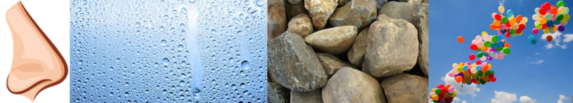

Accueil
Membres
Contact
A propos
La Matière
Les états de la matière
Changements d'état
Mélanges de liquides
Précipitation et dissolution
L'Optique
La propagration de la lumière
La composition des couleurs
Illusions d'optiques
la perception des images
L'énergie
(idée) qu'est-ce que l'énergie ?
Sources d'énergie
SVT
La biodiversité
Le fonctionnement du vivant : Les animaux
Les roches
Vers l'Infini et au delà
Voyage dans l'Univers
Le Système solaire
La vitesse de la lumière
Questions pour un astronaute
/!\ Expériences /!\
L'oeuf mou
Titre principal
Titres secondaires
Paragraphe
Paragraphe
Paragraphe
Paragraphe
